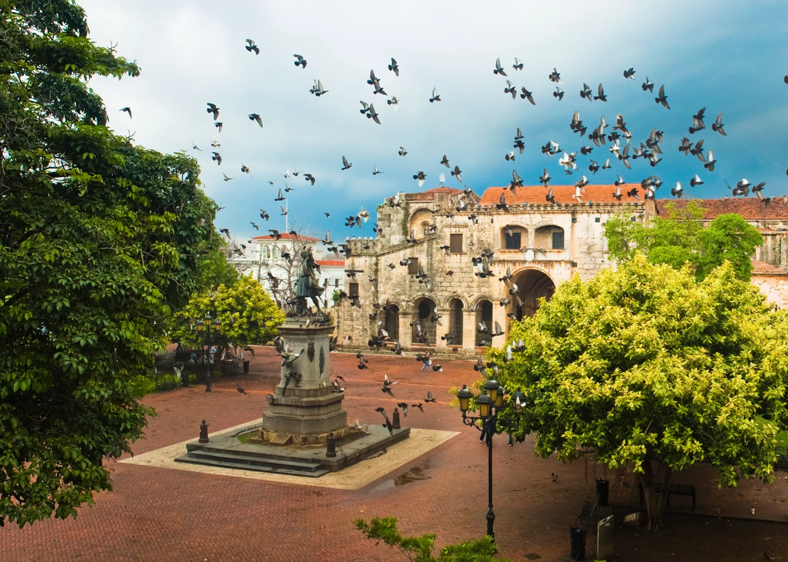

Meu nome é Geovani Galdino, tenho 25 anos e moro na cidade de Palmares, em Pernambuco. Sou apaixonado por tecnologia, educação e desenvolvimento de sistemas. Atualmente, estou cursando Análise e Desenvolvimento de Sistemas e busco sempre aprender mais sobre programação, especialmente nas áreas de Java, front-end e inteligência artificial. Nos meus momentos livres, gosto de desenvolver projetos práticos, viajar, conhecer novos lugares e explorar novas ferramentas digitais que possam transformar ideias em soluções criativas.
Hobbies
- Viajar
- Conhecer lugares novos
- Aprender coisas novas
Países que gostaria de conhecer
| País | Foto |
|---|---|
| México
O México não poderia ficar fora dessa lista! Embora a maioria das pessoas pensem apenas em ir às praias, resorts e baladas de Cancún, há vários outros lugares incríveis no caribe mexicano como a Lagoa de Bacalar, também conhecida como as Maldivas do México. |
 |
| Tailândia
A riqueza cultural, os templos de Bangkok e a beleza das praias tailandesas, misturadas ao caos urbano (tipicamente proporcionado por cidades do Sudeste Asiático), transformam a Tailândia em um destino imperdível. E para melhorar ainda mais, seus preços baixos fazem com que este seja considerado um dos países mais baratos para viajar. |
 |
| República Dominicana
A República Dominicana é um dos países baratos para viajar. Você pode até mesmo alugar um carro para conhecer o país de forma mais independente. No roteiro você não pode deixar de incluir a capital Santo Domingo, cidade considerada Patrimônio Cultural da Humanidade pela UNESCO e Punta Cana, o destino mais popular pelos resorts all inclusive que geralmente também possuem a opção de day use. |
 |